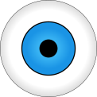

Your browser does not support HTML5! Upgrade now, you neanderthal!

Scene in world coordinates.
Your browser does not support HTML5! Upgrade now, you neanderthal!
Scene in camera coordinates.
e
= (
,
, )
theta =
Update Camera